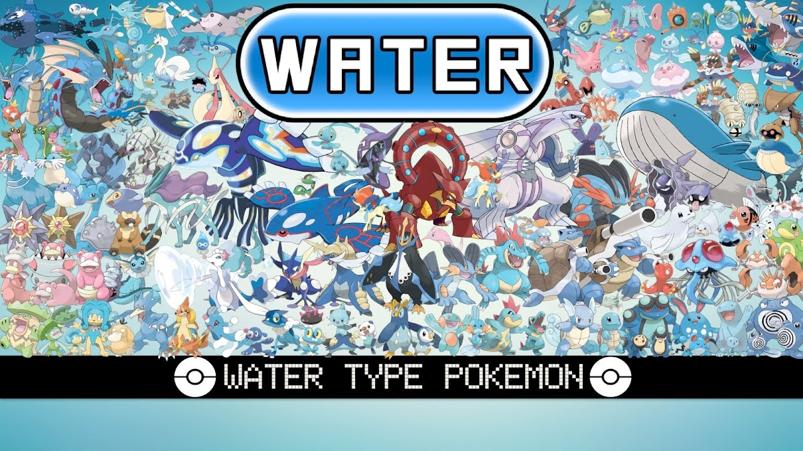

Water-Type Pokemon
Water-type Pokémon are among the most diverse and iconic creatures in the Pokémon universe, renowned for their adaptability, power, and elegance. From the playful Squirtle to the majestic Gyarados, these Pokémon inhabit a wide range of environments, from oceans and rivers to lakes and even urban areas. Their affinity for water makes them formidable opponents in battles and indispensable allies for trainers seeking to navigate aquatic challenges. One of the defining characteristics of Water-type Pokémon is their versatility. They boast an extensive movepool, including powerful Water-type attacks like Hydro Pump, Surf, and Aqua Tail, as well as a variety of other elemental moves such as Ice Beam and Hydro Cannon. This diversity allows Water-type Pokémon to excel in both offensive and defensive strategies, making them valuable assets in any team composition. Water-type Pokémon also exhibit remarkable adaptability to their surroundings. Some, like the majestic Lapras, are capable of traversing vast bodies of water with ease, while others, such as the nimble Greninja, are equally adept at navigating both land and sea. This adaptability not only enhances their survival skills but also makes them valuable companions for trainers exploring diverse environments. Moreover, Water-type Pokémon play a crucial role in maintaining ecological balance within the Pokémon world. Pokémon like Blastoise and Swampert are known for their ability to create and control water, which they use not only for battle but also for nurturing aquatic habitats and supporting local ecosystems. Their presence is vital for the well-being of both Pokémon and humans alike, underscoring the importance of preserving water-based environments. In addition to their practical utility, Water-type Pokémon hold a special place in the hearts of trainers and fans alike. From the adorable Psyduck to the enigmatic Kyogre, these creatures evoke a sense of wonder and fascination, captivating audiences with their diverse designs and captivating lore. Their popularity is evident in various media, including video games, trading card games, and animated series, where they often feature prominently in storylines and merchandise. In summary, Water-type Pokémon are not only formidable battlers and valuable allies but also symbols of adaptability, diversity, and ecological stewardship. Whether they're surfing the waves or exploring underwater caverns, these aquatic creatures continue to enchant and inspire trainers of all ages, ensuring that their legacy endures for generations to come.
